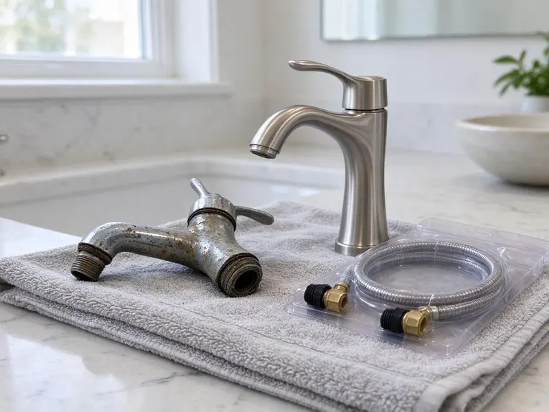

Gas Water Heater Replacement in Eden Prairie, MN
Get hot water back quickly with gas water heater replacement in Eden Prairie, MN, including new flex connectors, expansion tanks and venting checks.
- Same-Day Tank Installs
- Local Plumbers
- Fast Tank Swaps
- Trusted Brands
New Gas Water Heater, Installed and Tested in Eden Prairie, MN.
Get a free estimate on your gas water heater replacement before the old tank floods the floor.
Licensed Gas Water Heater Replacement in Eden Prairie, MN
CNV Plumbing handles gas water heater replacement across Minnesota, starting with the old tank out the door and ending with a draft test on the new one. Our licensed plumbers do the whole job. We do not sub it out.
Our expertise includes:
- Atmospheric, power vent and direct vent gas tank installs
- Thermal expansion tank installs sized to your water pressure
- Testing combustion air and safety controls.

Additional Plumbing Replacement Services in Eden Prairie, MN
When repairs are no longer enough, our replacement services in Eden Prairie, MN deliver durable upgrades that restore full performance.


Customers
Why Choose CNV Plumbing for Gas Water Heater Replacement in Eden Prairie, MN?
Extremely cold, long winters are the biggest stress on plumbing in Minnesota, and incoming water stays cold for much of the year. Garage water heaters sit in whatever temperature the garage holds, so combustion air and clearances matter. We check combustion air and clearances so the burner drafts correctly in every season. Keep the burner intake screen clean.
- Quality Brands, We install Rheem, Bradford White and A.O. Smith tanks with full warranty support.
- Known Brands, We install tanks from Bradford White, Rheem and A.O. Smith with solid warranty support.
- Upfront Pricing, You get a flat installed price that covers the tank, parts, permit and removal of the old unit.
Citywide Coverage
From older homes with closet heaters to newer builds with garage platforms, we replace gas water heaters in every part of Eden Prairie. We carry the usual sizes. So the job finishes the same day.
Experienced Team
Our crew replaces gas heaters every week and spots back-drafting flues and missing expansion tanks within a few minutes of walking in. Those get fixed during the swap. You will not need a second visit.
Safety-First Approach
Start-up is where we slow down. After the tank fills and the air is bled from the hot lines, we light the burner, watch the flame and confirm the draft pulls before leaving. We follow national and local gas codes.
Trusted Certified Eden Prairie Plumbing Services Professionals
At CNV Plumbing, we are proud to offer certified plumbing services throughout Eden Prairie, MN. Those papers on the wall mean something. Our plumbers hold recognized industry credentials, and they follow strict safety and quality rules on every repair, installation and maintenance call we run.
Call Us Now PHCC Plumbing Contractor Recognition
PHCC Plumbing Contractor Recognition Better Business Bureau (BBB) Accreditation
Better Business Bureau (BBB) Accreditation Angi Certified Pro
Angi Certified Pro ISO 9001 Quality Management Certification
ISO 9001 Quality Management CertificationGas Tanks We Replace in Eden Prairie, MN
Propane Gas Water Heater Replacement in Eden Prairie, MN
Propane heaters run at about 11 inches of water column instead of the 7 inches typical for natural gas, so the gas valve and orifice have to match the fuel. A natural gas unit does not go on propane unless the manufacturer allows a conversion. Pressure gets checked with a manometer.

Large Capacity 75 Gallon Gas Heaters in Eden Prairie, MN
Big families with soaking tubs often outgrow a 50 gallon tank and need a 75 gallon heater or a high-recovery 50 at around 65,000 to 75,000 BTU. Those burners need more gas. We size the gas line before installing, since an undersized line cuts recovery.
Commercial Gas Water Heater Replacement in Eden Prairie, MN
Commercial gas heaters in restaurants and offices often run 75 to 100 gallons at 75,000 BTU or more, and they need a gas line sized for that load. Code is stricter here. Sizing comes from peak demand and recovery rate.
Standard Gas Water Heater Replacement in Eden Prairie
A standard 40 or 50 gallon atmospheric tank is what most homes have, and swapping one like for like is a two to three hour job when the venting and gas line are in good shape. We drain the old tank, cap the gas, and set the new heater on a stand or pan. New flex connectors every time. We soap-test the gas joints and check the draft hood with the burner lit.
Emergency Gas Water Heater Replacement in Eden Prairie, MN
Water on the floor around the tank usually means the inner tank has rusted through, and that is not a repair. Close the cold water valve above the heater and set the gas knob to off. After that, give us a call. Common sizes are on the truck, so same-day hot water is normal.
Bradford White Gas Water Heater Installation in Eden Prairie
Bradford White tanks are sold only through plumbing wholesalers, not big-box stores, and plenty of Minnesota plumbers install them for that reason. Replacement parts are easy to find. We follow their venting and clearance specs to the letter, which keeps the warranty valid.
Choosing Between Gas Tank Brands in Eden Prairie, MN
Warranty length on a tank mostly tracks anode size and burner design, so a 12-year tank is a different build from a 6-year one. Self-cleaning dip tubes help on hard water. Powered anodes outlast standard rods. We price it against how long you plan to stay.

40 and 50 Gallon Tank Replacement in Eden Prairie
Forty and fifty gallon gas tanks are the workhorse in most Minnesota homes, and a leak at the bottom seam means the tank is finished. Newer tanks can run taller than the old one. We check clearance before we order. Plan on about two to three hours.
Gas Water Heater Replacement Near Me in Eden Prairie, MN
Waiting days for a tank is rare with us. Common gas tanks ride on the truck in short and tall versions, which means most jobs wrap up in one trip. A 75 gallon may take a day to get.
Local code in Eden Prairie sets the rules for venting and relief valve discharge, and an inspector will check both on the final. We install to pass the first time. Callbacks are rare.
CNV Plumbing at a Glance
- Fully licensed plumbing team covering Eden Prairie, MN
- Same-day appointments and 24/7 emergency response
- Clear written estimates, no hidden fees
- 4.8-star rated by 501+ Minnesota customers
Eden Prairie Map
Eden Prairie Information
- Population
- 62,166
- Area codes
- 952/763/612
- Service area
- Eden Prairie and towns within a 40 mile drive
- Nearby
- Edina, Minnetonka, Bloomington, St. Louis Park
Extremely cold, long winters are the biggest stress on plumbing in Minnesota, and incoming water stays cold for much of the year. Garage water heaters in Eden Prairie, MN also collect sediment over time, so a correctly vented and flushed gas tank replacement protects both safety and tank life.
Expert Services
Reach out to CNV Plumbing for honest, reliable plumbing from people who know the trade in Eden Prairie, MN.
Our Specialized Plumbing Services in Eden Prairie, MN
At CNV Plumbing, you get every kind of plumbing service from one company across Eden Prairie, MN. From leak detection to full system installs, our team works fast and charges fair prices on homes and commercial properties alike. Explore our core services below:


How a Gas Water Heater Swap Works in Eden Prairie, MN
Replacing a gas water heater is straightforward when it is done in the right order.
Call or Book
Call (612) 712-9569 or use the online form. We talk through your tank, its location and what it is doing.
Look at the Setup
A licensed tech visits your Eden Prairie home, checks the gas line and vent and recommends a replacement.
Install the Tank
We remove the old heater and install the new tank with new gas, water and vent connections, all to code.
Frequently Asked Questions About Gas Water Heater Replacement in Eden Prairie
Plan on $1,200 to $3,000 with the tank and labor included. Model and size drive most of it, plus any gas or vent changes needed for code. We quote after a look.
It is risky. A gas leak, a bad vent or a misrouted relief line can cause fire or carbon monoxide problems you will not see coming. We also take care of permits.
Atmospheric vent heaters rely on hot exhaust rising up a metal flue on its own. A power vent uses a blower to push exhaust through PVC, so it can exit through a wall and usually runs a little more efficiently. Power vents need an outlet.
Manufacturer warranties run 6 to 12 years on the tank, depending on the model. Our installation warranty sits on top of that and covers the connections, the venting and the relief valve piping we installed on the day. Parts coverage is shorter.
Eight to twelve years for most gas tanks. Sediment from hard water and big temperature swings in an uninsulated garage can shorten that by a few years or more. Annual flushing and anode checks stretch it out.
Tank warranties usually run 6 to 10 years, with 1 to 2 years on parts like the gas valve and igniter. We add a labor warranty. Keep the receipt.
Flush the tank once a year. A yearly flush keeps sediment from hardening, and an anode check every three years catches a spent rod before the tank rusts. Proper sizing helps too.
Tankless makes sense if you want endless hot water and plan to stay a while. The upfront cost is higher, so we can price both and let you compare.
What Our Customers Say About Our Plumbing Experts

Nathan E.
Our tankless heater kept throwing an error code and shutting off mid shower. The tech flushed the heat exchanger, which was full of scale, and replaced a bad flow sensor. Hot water has been steady for half a year now.
Water Heater Repair · St. Louis Park, MN
Megan L.
Our upstairs tub drained so slowly that every shower turned into a bath. CNV Plumbing pulled a wad of hair out of the stopper and then snaked the line past the trap. Three months later it still drains fast.
Drain Cleaning · St. Louis Park, MNLisa C.
Water was pouring out from under the washing machine on a holiday weekend. CNV Plumbing talked me through closing the valves over the phone and had a plumber at the house within ninety minutes. It was a burst fill hose.
Emergency Plumbing · Edina, MN
Jessica T.
We were adding a gas range in a kitchen remodel and needed a new line run from the meter. The plumber pulled the permit, ran the pipe through the crawl space, and had it inspected and approved within the week.
Gas Line Repair · Edina, MN
Angela D.
Our sump pump quit during a storm and the water was an inch from the basement carpet. CNV Plumbing put in a new pump with a battery backup that same evening. We have had two heavy rains since. It kicked on both times.
Sump Pump · St. Louis Park, MNTyler J.
We bought a taller comfort height toilet for my dad, who just had knee surgery. The plumber pulled the old one, found the flange was cracked, and replaced it before setting the new bowl. Took about two hours.
Toilet Installation · Plymouth, MN